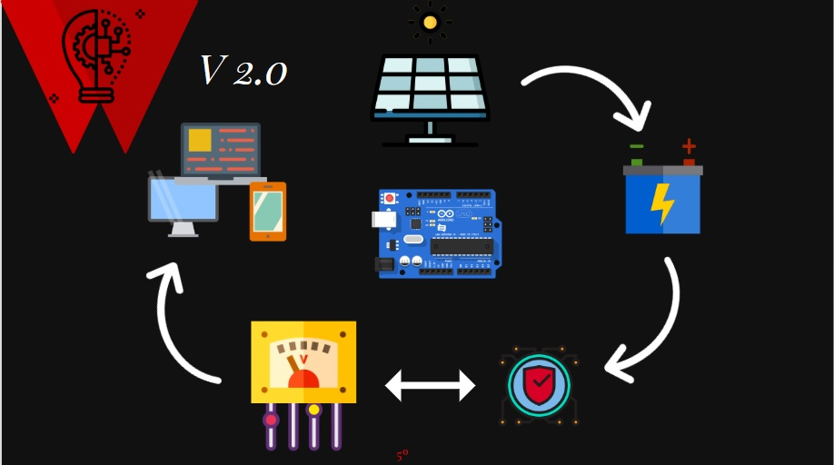

Nosotros
Nostros los alumnos de valle grande realizamos un proyecto que optimiza la energia que nos brinda los paneles fotovoltaico y asi cuidar los entornos naturales y Lo que queremos demostrar con el proyecto:
Se ha realizado, queremos demostrar que un panel fotovoltaico tiene un gran potencial al generar energía eléctrica, porque este no se esta explotando como debería, ya que este permanece Inamovible en la mayoría de instalaciones de paneles fotovoltaicos que se hacen en casas o industrias.
